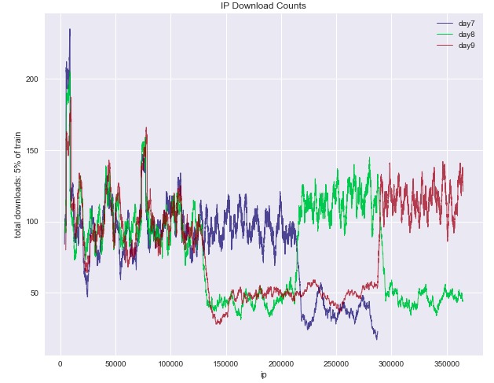

May, 2018
So it's finally over! I can come out of the Kaggle hole in which I've been hiding for the last month or so. It's been quite a little ride. When we left off, I was struggling to engineer some new features and was looking at ways to deal with the size of the data set, such as using an Easy Ensemble (which failed miserably). Since then, I had several little breakthroughs.
First, I started using a much better validation method. This let me really gauge whether the features I was adding and the model parameters I was using were adding to my model's success or causing it to overfit the training data.
Second, I spent a lot of time reading the forums and realized I was missing a key piece of information. TalkingData had accidentally released a larger test set early on, and were now providing it to everyone so nobody had an unfair advantage. I needed to incorporate this larger set when calculating my features on the test set since many of my features involved counting clicks over certain groupings and measuring the time between clicks. Without the full picture, my calculations had been off.
Third, due to the way TalkingData set up the encoded features, it made sense to create my features on a daily basis rather than for the entire set altogether (i.e. the group counts, etc. would reset each day. See the chart below.)
Partially, I think I got a little lucky. I feel like I was thinking through things, but using only my 14 features and getting an AUC score of .9805 seems pretty magical, especially when others were using fancier computers and more features only to be stuck in the high .9700s. But I'll take a little magic I guess!
My relatively simple and high performing model caught the attention of another team, and they reached out to me. We had fairly different approaches, and their score was pretty close to mine, so we joined forces, hoping that combining our models would prove effective. The story from here is rather long. In a nutshell, we spent a lot of time writing a separate report that we sent directly to TalkingData explaining why we thought the competition setup was a bit flawed. Submissions were evaluated based on the AUC score of predictions about whether the app was downloaded, but the competition was billed as fraud detection. We discovered machines that were obviously fraudulent clickers but which still downloaded the app.
In the meantime, other teams continued to improve their models and our position on the leaderboard dropped. We adjusted our model to its final form, and we were in a good place to finish in the top 4% or so, a fairly satisfactory place for a first time contestant. But, alas, 8 hours before the end of a three-month-long competition, a user posted a kernel which provided a score of .9811. So all of the copy-and-paste aficionados leap frogged us, and we fell down to 12%. I ended up pretty disappointed in how the competition ended.
But, I learned a lot along the way. Here are my takeaways:
The daily work involved in doing well in a Kaggle contest is not the same work a data scientist or analyst does. The models created by data scientists are deployed at scale, so efficiency must be carefully weighted against accuracy, as accuracy often comes from complexity, and complexity comes at the cost of speed. For Kaggle, the only factor that matters is accuracy. In a Kaggle contest, spending hours and hours getting your metric to increase by 0.0005 is time very well spent. This is not the case in the real world. Kaggle can be great fun, and a great learning experience, but the competitions should be approached the same way an RPG should be. Do you want to spend 250 hours leveling up from level 75 to 76? Yeah? Great! Go ahead. But if you're more interested in just learning the ropes, maybe try to get into the top 25% and move on.
While the Kaggle community is great about sharing and teaching, this ends up being a double-edged sword. I definitely got a lot of help at the beginning through the discussions and the kernels. I would comb through the forums looking for new ideas if I got stuck on my end. But I'm not sure that the ability to run a full kernel and get the exact submission from someone else is beneficial to the community, and I definitely feel it's a detriment to the competition. The forums should be a place for exploratory data analysis, code snippets, etc, but not for sharing complete solutions to the problem. So much of my and my teammates hard work was undone at the last second from one person posting a kernel (and all those competitors who took advantage of it). If somebody's Kaggle rank is supposed to mean anything in the real world, copy-and-pasting your way to the top shouldn't be possible.
I recently listened to an episode of DataFramed where Hugo Bowne-Anderson interviews Anthony Goldbloom, the CEO of Kaggle. Goldbloom says that the competitions on Kaggle are only about a fourth of the activity on the site. Kaggle also offers dataset storage and sharing, and the kernels can be used to write, share, and run any code you want. Kaggle was recently acquired by Google, and will soon grant access to GPU (graphics processing unit) and TPU (tensor processing unit) machines. I know of no where else the public can have access to this kind of computing power for free. Deep learning with artificial neural networks is one of the areas on which I'd eventually like to focus, so I'm excited to see this feature launched.
Overall, despite how it ended, I'm fairly satisfied with my first Kaggle competition experience. I got to try a nice handful of different algorithms and techniques on a real-world data set and have my results measured against others in the field. If you're an aspiring analyst or data scientist, but haven't dived into the world of Kaggle yet, then, to quote the immortal Ms. Frizzle: "Take chances, make mistakes, and get messy!"
PS - DataCamp.com has several tutorials on how to get started with Kaggle competitions. Check them out!